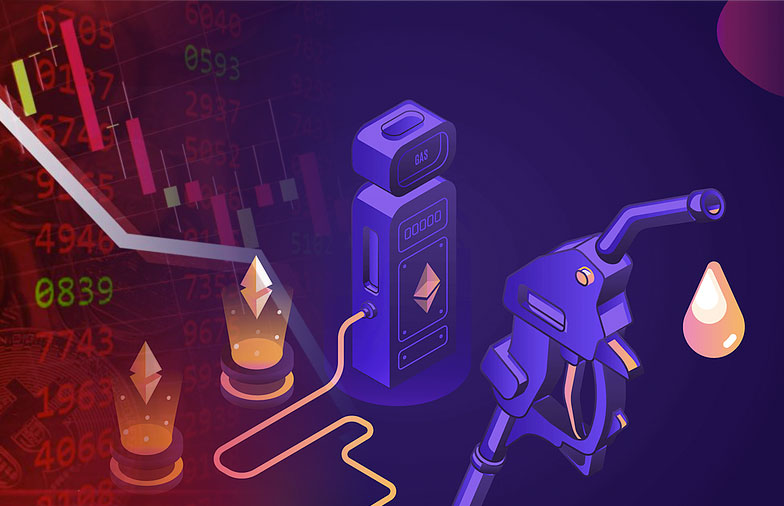
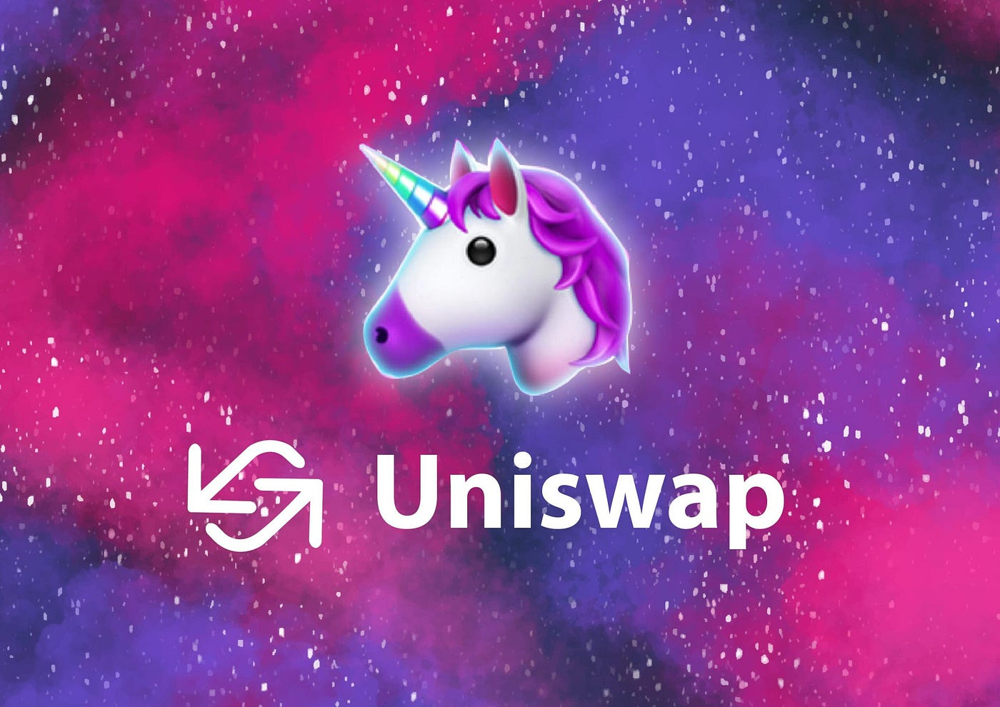

This digital wallet functions as a chrome extension so that you can connect your digital wallet to a number of different sites with different functions. This site will list a step by step on how to create your own. Metamask released a video describing the general idea of their service.
Once the extension has been added, you will be prompted to create a password, and then given a recovery phrase. Don’t share this with anyone else, and have it written somewhere you will remember, in the case you forget your password, this is the only way to recover it.
The Secret Recovery Phrase functions as the backdoor to your wallet, if somebody possesses this and some of your basic information, they will inherently gain access to everything on the wallet.
You will then be asked to click the words of the phrases in order to confirm that you have saved the phrase somewhere. After you have completed that and click through a confirmation or two, you are now the proud owner of your own MetaMask wallet.
Now that you own a crypto-wallet, you are able to own, and transfer a number of currencies to whoever you want, given you have the address. For the Ethereum chain, as Ether is often required to send and make transactions. These fees are referred to as gas fees and are measured in GWEI. One GWEI is the equivalent of a billionth of an Ether.


To make MetaMask even more accessible, you’re going to want to add the extension to the hot bar in the top right (if not there already). To do so hit the puzzle icon, and then pin MetaMask to the bar. When accessing from this hot bar, MetaMask creates a more compartmentalized experience where you can access all basic information.
A Software wallet functions as any regular wallet does, with the exception that it is able to directly interface with websites for a more seamless experience. To demonstrate this we will connect our wallet to a DEX, or a decentralized exchange.
On the DEX Uniswap (Uniswap.org), at the top right there is a launch app button, which redirects you to the interface. When you try to connect it will ask which wallet you will be using, in this case, we will use MetaMask. When you successfully connect it should be a nearly seamless connection when you try to interact with the website.
Uniswap should show your wallet address in the top right, this is how you can tell you are logged in. Now if you had any tokens or anything, you could swap them into any other token provided you had enough for gas.
To obtain crypto initially someone would either have to send it to you, or you would use an exchange to buy the currency. Once you’ve purchased and the tokens are in your exchange account, you are going to go back to your MetaMask get the address and send the tokens to your wallet’s address. When making these transactions make sure you are using the intended chain (for ETH it’s ERC20) or you will be essentially burning tokens.
Often people send a dollar or some smaller unit before sending the full amount, simply to verify that you had all the correct settings for the transaction.
If you’ve followed all of these steps, you are an owner of your own cryptocurrency, and have access to an exchange, as well as a digital wallet to store your coins. Never type/write this information anywhere that can be accessed by another person; the saying that repeatedly holds true in this area, “not your keys, not your coins.”